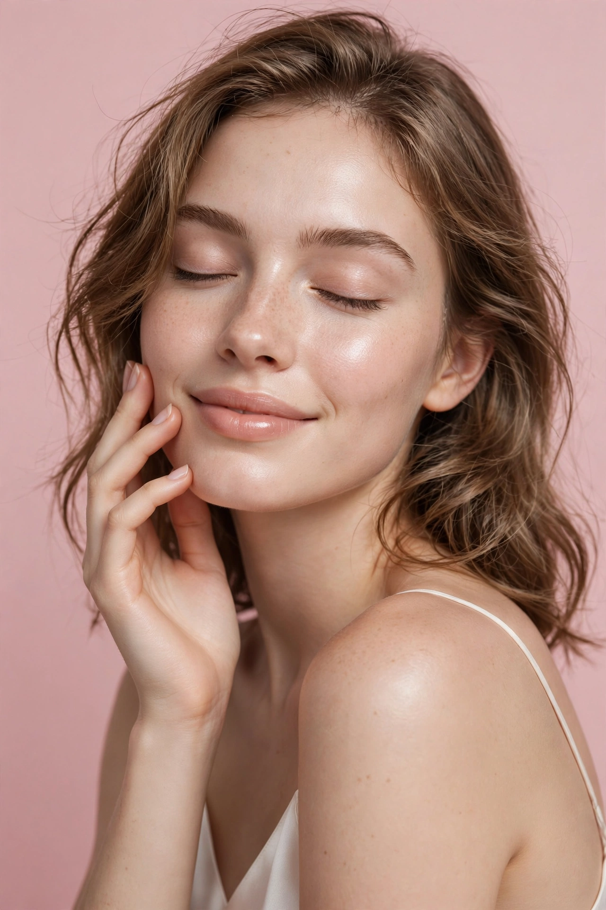

Découvre ta saison de couleurs et réveille ton éclat
Un selfie, quelques questions, et tu repars avec ton score d'éclat, ta palette de couleurs idéale, l'analyse de ton visage et les premières étapes de ton plan beauté — en 5 minutes, gratuitement.

Comment ça marche
Trois étapes, aucun compte à créer. L'analyse de ta photo se fait directement dans ton navigateur : elle n'est ni envoyée, ni conservée.
Envoie ton selfie
Une photo de face, à la lumière du jour, sans filtre. Elle est analysée sur ton appareil pour lire la tonalité et la luminosité de ta peau.
Réponds à 8 questions
Teint, sous-ton, cheveux, yeux, bijoux qui te vont le mieux… C'est ce qui permet de déterminer ta saison de couleurs avec précision.
Reçois tes résultats
Score d'éclat, saison, palette idéale, analyse du visage et plan d'action. Le plan complet et la routine détaillée se débloquent en premium.
Ce que tu obtiens
Le scan gratuit te donne l'essentiel. Le plan complet va plus loin : chaque étape détaillée, ta routine maquillage minutée et les produits adaptés à ta saison.
Score d'éclatGratuit
Une note sur 100 avec le détail : luminosité, homogénéité du teint et harmonie de tes couleurs.
Ta saison de couleursGratuit
Printemps, Été, Automne ou Hiver : ta palette idéale pour le maquillage et les vêtements, et les teintes qui te desservent.
Analyse de ton visageGratuit
Ce que ta photo révèle : éclat, zones à travailler et tes points forts naturels à mettre en avant.
Plan complet + routine minutéePremium
Les 5 étapes détaillées jour par jour, ta routine maquillage chronométrée selon le temps que tu as, et la sélection de produits pour ta saison.